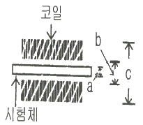
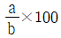
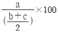
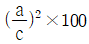
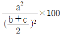
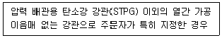
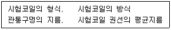

와전류비파괴검사기사 (2015-05-31 기출문제)
1과목: 비파괴검사 개론
1. 검사장비의 교정이 타 방법에 비해 중요한 조합은?
- 방사선투과검사, 초음파탐상검사
- 초음파탐상검사, 와전류탐상검사
- 초음파탐상검사, 자분탐상검사
- 누설탐상검사, 침투탐상검사
(정답률: 94%)

2. 침투탐상검사법의 특징을 기술한 것으로 옳은 것은?
- 장기간 사용한 구조물의 내부 피로균열의 검출에 우수하다.
- 강자성체의 표면결함검출에 자분탐상검사보다 효과적이다.
- 와류탐상검사보다 적용범위가 좁다.
- 방사선투과검사에 비하여 미세한 표면결함검출에 신뢰성이 높다.
(정답률: 79%)
3. 초음파탐상검사의 특징을 설명한 것 중 틀린 것은?
- 검사결과를 신속히 알 수 있다.
- 표준시험편 또는 대비시험편 등이 필요하다.
- 균열과 같은 미세한 결함에 대해서도 감도가 높다.
- 조대한 결정입자를 가진 시험체의 검사에 적합하다.
(정답률: 89%)
4. 다음 중 엑스선발생장치에 대한 설명으로 틀린 것은?
- 자외선보다 파장이 짧은 광자를 방출한다.
- 전원이 필요하다.
- 원자번호가 낮은 물질로 차폐한다.
- 발생된 방사선강도는 거리제곱에 반비례한다.
(정답률: 85%)
5. 다음 중 와전류탐상검사의 장점이 아닌 것은?
- 시험체가 고온이거나, 구멍의 내부 등 다른 시험방법을 적용할 수 없는 대상에 사용이 가능하다.
- 결함검출 및 재질검사 등 여러 데이터를 동시에 얻을 수 있다.
- 결함의 종류, 형상, 치수를 정확하게 판별할 수 있다.
- 관, 선, 환봉 등에 대해 고속도로 시험이 가능하다.
(정답률: 92%)
6. 해드필드(Hadfield) 강이라고 하며, 조직은 오스테나이트이고, 가공경화성이 우수한 특수강은?
- Cr 강
- Ni-Cr 강
- 고 Mn 강
- Cr-Mo 강
(정답률: 72%)
7. 분말야금법을 이용한 제품 제조법의 특징을 설명한 것 중 옳은 것은?
- 제품형상의 제한이 크다.
- 후가공으로 절삭가공이 필요하다.
- 성분계의 공용한도가 제한이 있다.
- 용융점이 높은 재료의 경우에도 용융하지 않고 제품을 제조할 수 있다.
(정답률: 71%)
8. 지름이 12mm이고 시험 전 표점거리가 110mm인 탄소강을 최대하중 3000kgf 으로 인장시험 한 결과, 시험편이 절단되었을 때 연신율이 15% 이었다면 파단시 늘어난 표점길이는 몇 mm 인가?
- 115.6
- 116.5
- 120.3
- 126.5
(정답률: 67%)
9. Mg-Al 계 합금으로서 소량의 Zn과 Mn을 첨가한 합금은?
- 인바
- 라우탈
- 엘렉트론
- 퍼멀로이
(정답률: 82%)
10. 다음 중 경화능을 향상시키는 원소의 영향이 큰 순서에서 작은 순서로 나열된 것은?
- B ＞ Mn ＞ Cr ＞ Cu
- Cu ＞ Mn ＞ B ＞ Cr
- Cr ＞ Cu ＞ B ＞ Mn
- Mn ＞ Cr ＞ Cu ＞ B
(정답률: 71%)
11. 탄소강에서 망간(Mn)의 영향 중 틀린 것은?
- 상온취성을 방지한다.
- 공구강에서 담금질 파열을 초래하기 쉽다.
- 고온에서 소성을 증가시키며 주조성을 좋게 한다.
- Mn 은 연신율을 감소시키지 않고 강도를 증가시킨다.
(정답률: 64%)
12. 오스테나이트계 스테인리스강의 공식을 방지하기 위한 방법이 아닌 것은?
- 할로겐 이온의 고농도를 피한다.
- 산소농담전지의 형성을 피한다.
- 질산염, 크론산염 등 부동태화제를 가한다.
- 재료 중의 C를 많게 하거나 Ni, Cr 등을 적게 한다.
(정답률: 67%)
13. 확산의 방법을 이용하지 않는 열처리법은?
- 질화법
- 침탄법
- 담금질법
- 금속침투법
(정답률: 89%)
14. 황동 가공재에서 자연균열이 발생하는 주원인은?
- 아연 도금 때문에
- 황의 유동 때문에
- 저온 풀림에 의해서
- 응력 부식에 의해서
(정답률: 77%)
15. 고속도강의 기호로 옳은 것은?
- SM
- SKH
- SPS
- STC
(정답률: 89%)
16. 피복아크 용접봉 피복제가 갖추어야 할 성질이 아닌 것은?
- 쉽게 이온화 될 것
- 탈산 능력이 있을 것
- 수분 함량이 많을 것
- 슬래그(slag)를 형성하는 능력이 있을 것
(정답률: 67%)
17. 피복 아크 용접에서 아크 전압이 30V, 아크 전류가 150A, 용접속도는 15cm/min 일 때 용접부에 주어지는 용접 입열량은 몇 Joule/cm 인가?
- 22500
- 13500
- 24500
- 18000
(정답률: 79%)
18. 플라스마 아크용접에 사용되는 플라스마의 온도는 얼마 정도인가?
- 5000~6000℃
- 6000~8000℃
- 10000~30000℃
- 50000~80000℃
(정답률: 79%)
19. 연강용 피복 아크용접봉 중 내균열성이 가장 좋은 것은?
- 고셀룰로스계
- 티탄계
- 고산화철계
- 저수소계
(정답률: 71%)
20. 피닝법(Peening method)의 목적이 아닌 것은?
- 용접변형 경감
- 잔류응력 완화
- 용접부 경화
- 용착금속 균열방지
(정답률: 70%)
2과목: 와전류탐상검사 원리
21. 와전류탐상시험으로 알 수 없는 것은?
- 전도체의 전기전도도
- 전도체 표면 직하의 균열
- 전도체에 코팅된 절연체 두께
- 전도체에 코팅된 절연체의 전기전도도
(정답률: 67%)
22. 와전류탐상시험에 영향을 주는 3가지 주요 요소는?
- 열적 전도도, 주파수, 시험체의 기하학적 모양
- 밀도, 투자율, 주파수
- 전기적 전도도, 투자율, 시험체의 기하학적 모양
- 열적 전도도, 전기적 전도도, 투자율
(정답률: 85%)
23. 검사 부품의 특성 변화로 인한 와전류 시험코일의 임피던스 변화는 무엇을 변화시킴으로써 쉽게 분석할 수 있는가?
- 신호 증폭과 위상
- 시험주파수와 탐상감도
- 평형기의 평형조정과 프로브와 시험면간의 거리
- 프로부 코일의 직경과 코일의 자력
(정답률: 78%)
24. 와류탐상시험의 적용 방법으로 다음 중 가장 알맞게 짝지어진 것은?
- 비전도체 – 결함 측정
- 전도체 – 치수변화 측정
- 강자성체 – 전도도 측정
- 비자성체 – 투자율 측정
(정답률: 62%)
25. 일바적으로 와전류탐상시험에서 시험체의 투자율을 나타내는 기호로 옳은 것은?
- Ω
- μ
- V
- R
(정답률: 100%)
26. 자체유도계수가 50×10-3[H]인 코일이 있다. 0.1초 사이에 5[A]의 전류가 증가한다면 이 회로에 발생하는 유도 기전력의 크기는?
- 2.5V
- 5V
- 25V
- 50V
(정답률: 82%)
27. 와류탐상시험에서 한 시험체의 일부분을 기준점으로 하고 다른 한 점 비교점으로 하여 운영하는 탐촉자는?
- 단일 절대법 코일
- 이중 절대법 코일
- DC 자기포화 코일
- 차동법 코일
(정답률: 71%)
28. 다중주파수(multi frequency) 와전류탐상시험에 대한 설명으로 가장 옳은 것은?
- 주파수를 바꿔가면서 시험체를 여러 번 검사하는 방법이다.
- 시험코일에 2개 이상의 시험주파수를 동시에 가하여 검사하는 방법이다.
- 여러 개의 코일에 각각 다른 주파수를 사용하여 검사하는 방법이다.
- 시험체의 성질에 따라 각각 다른 주파수를 사용하여 검사하는 방법이다.
(정답률: 75%)
29. 전기저항이 4Ω인 구리막대가 있다. 이 막대를 잡아 늘려 길이를 처음의 2배 되도록 했을 때의 저항은 몇 Ω이 되는가?
- 1Ω
- 4Ω
- 16Ω
- 32Ω
(정답률: 80%)
30. 영구자석을 구성하는 금속원자의 자력특성을 나타내는 것 중 자성체의 구성요소에서 가장 작은 영역은?
- 세포
- 자구
- 격자구조
- 자기장
(정답률: 72%)
31. 평면형 코일로 판을 검사할 때 검사표면에서 코일까지의 거리가 변하면 와류출력지시도 변한다. 이러한 작용을 무엇이라 하는가?
- fill-factor
- Lift-off
- 위상분리
- 모서리 효과
(정답률: 100%)
32. 시험체의 전도도와 검사 속도를 각각 4배로 증가시키면 와전류의 표준 침투깊이는 어떻게 되는가?
- 4배로 증가
- 2배로 증가
- 변함 없음.
- 1/2배로 감소
(정답률: 84%)
33. 직경 0.68인치의 내삽코일을 사용하여 외경 0.875인치, 두께 0.⑤인치의 튜브를 와전류탐상법으로 검사할 때 충전율(fill factor)은?
- 0.769
- 0.877
- 1.140
- 1.299
(정답률: 75%)
34. 다음 중 와전류탐상시험의 장점이 아닌 것은?
- 고속으로 자동화한 효과적인 검사가 가능하다.
- 비접촉법으로 프로브를 접근시켜 검사할 수 있다.
- 결함크기, 재질변화 등을 동시에 검사가 가능하다.
- 강자성체를 검사해 얻은 결과에서 직접적으로 종류, 형상 등의 판별이 쉽다.
(정답률: 100%)
35. 와전류탐상시험에서 코일의 지름과 시험편의 지름과의 비율을 무엇이라 하는가?
- 충전(진)율
- 검사속도
- 침투 깊이
- 주파수
(정답률: 100%)
36. 탄소봉강에 대하여 와전류탐상시험 할 때 가장 큰 침투깊이를 갖는 시험주파수는?
- 100Hz
- 1000Hz
- 10kHz
- 10MHz
(정답률: 93%)
37. 와전류 탐상기의 직류 자기포화 장치를 작동할 때 가장 근처에 놓여 있지 말아야 할 것은 무엇인가?
- 강자성 철 조각이나 시계
- 방사선 계측기나 필름
- 자장계나 자속 밀도계
- 전도성 물질 조각이나 대비시험편
(정답률: 95%)
38. 와류탐상 시험주파수 선택 시 고려할 사항이 아닌 것은?
- 결함의 예상깊이
- 최대 감도주파수
- 제품 이송속도
- 사용 접촉매질 성분
(정답률: 85%)
39. 와전류탐상장치의 교류 증폭기의 성능 측정을 하여야할 사항으로 옳은 것은?
- 이득, 잡음, 직선성
- 이득, 주파수, 직선성
- 주파수, 직선성, 리젝션
- 감쇄 경도(dB/octave), 충진율, 위상
(정답률: 78%)
40. 검사코일의 유도리액턴스와 저항을 각각 X, Y축으로 표현한 그래프를 무엇이라 하는가?
- 자기 이력곡선
- 임피던스 평면
- 벡터 포인트 평면
- 인덕턴스 평면
(정답률: 63%)
3과목: 와전류탐상검사 시험
41. 와전류탐상검사에서 임피던스의 변화는 어떤 현상의 조합으로 표현되는가?
- 신호 진폭과 위상
- 조화주파수와 자기포화
- 용량성 리액턴스와 저항
- 조화 주파수와 유도 리액턴스
(정답률: 61%)
42. 강관의 와전류탐상검사에서 잡음증가의 원인이 될 수 없는 것은?
- 발진기 출력의 저하
- 부적절한 위상조절
- 탐상감도의 저하
- 직류자기포화 전류의 증가
(정답률: 24%)
43. 와전류탐상시험에서 전기적 기본 개념의 설명으로 올바른 것은?
- 저항에 교류 전압을 걸면 전류는 그 전압과 90°지연된 위상 차이가 나타난다.
- 코일에 교류 전압을 걸면 전류는 그 전압과 90°지연된 위상 차이가 나타난다.
- 콘덴서에 교류 전압을 걸면 전류는 그 전압과 90°지연된 위상 차이가 나타난다.
- 저항에 직류 전압을 걸면 전류는 그 전압과 90°지연된 위상 차이가 나타난다.
(정답률: 100%)
44. 다음 중 와전류의 표피효과에 직접적으로 영향을 주는 인자는?
- 검사 주파수
- 피검물의 온도
- 피검물의 경도
- 피검물의 두께
(정답률: 75%)
45. 와전류탐상검사 시 티타늄 전열관의 와전류탐상에서 X축 성분과 Y축 성분이 같은 8자 신호가 나타났다면 이 지시의 위상각은?
- 0°
- 45°
- 60°
- 90°
(정답률: 84%)
46. 관통형 코일에 의해 도체에 유도된 와전류의 특성은?
- 와전류의 세기는 코일 내의 전류에 비해 세다.
- 와전류는 피검물 내의 투자율 변화에 영향을 받는다.
- 와전류는 도체내에서 힘 없이 분산된다.
- 와전류는 직류처럼 흐른다.
(정답률: 90%)
47. 검사 코일의 유도 리액턴스는 가장 중요한 임피던스량의 하나이다. 이것은 다음 중 어느 것에 의존하는 함수인가?
- 주파수, 코일 인덕턴스, 코일 저항
- 코일 저항과 인덕턴스
- 주파수와 코일 저항
- 주파수와 코일 인덕턴스
(정답률: 62%)
48. 와전류탐상검사 시 결함 등에 의한 검사코일의 임피던스 변화를 전기적 신호로 교환하는 역할을 하는 것은?
- 시험코일
- 발진기
- 브릿지회로
- 이상기
(정답률: 70%)
49. 다음 중 충전율(fill factor)에 관한 설명으로 잘못된 것은?
- 표면코일의 경우에 코일과 시험체의 거리를 일컫는 용어이다.
- 1에 가까울수록 좋은 결과를 얻을 수 있다.
- 0.6 이상이면 바람직하다.
- 코일 직경과 시험체 직경의 비를 제곱한 값이다.
(정답률: 60%)
50. 미소한 전도도의 차이, 형상변화 등의 검출 보다는 균열과 같은 결함에 대해 급격한 변화를 나타내는 시험코일로 널리 사용되며, 특히 자동탐상 시 많이 이용되는 대표적인 시험방식은?
- 절대법
- 자기비교형방식
- 상호비교형방식
- 상호절대법
(정답률: 50%)
51. 팬케이크 코일이 검사체 주위를 회전하면서 검사하돌고 고안된 코일을 무엇이라고 하는가?
- 보빈 코일
- 외삽형 코일
- 회전형 코일
- 갭형 코일
(정답률: 92%)
52. 와전류탐상검사에서 사용되는 표준시험편의 사용목적과 거리가 먼 것은?
- 시험감도 조정
- 케이블 교체시기 결정
- 탐상기의 특성확인
- 결함의 정량적 측정
(정답률: 67%)
53. 와전퓨탐상시험법에서 자기포화(magnetic saturation)를 시켜야 하는 이유는?
- 신호의 감도를 증대시키려고
- 시험체의 잔류 자화율을 측정하력
- 투자율 변화로 인한 신호를 억제하려고
- 투자율 신호를 최대로 하려고
(정답률: 77%)
54. 다음 중 와전류탐상코일의 몸체로 쓰이는 물질로서 적합한 것은?
- 알루미늄
- 구리
- 철
- 섬유 유리
(정답률: 70%)
55. 다음 중 와전류탐상법이 아닌 것은?
- 임피던스 시험(impedance testing)
- 재거 테스트(jager testing)
- 변조분석시험(modulation analysis testing)
- 위상분석시험(phase analysis testing)
(정답률: 94%)
56. 와전류탐상검사 장치 중 증폭기와 이상기의 출력을 비교해서 결함신호를 검출하는 것은?
- 브릿지 회로
- 선별기
- 밸런스 미터
- 동기 검파기
(정답률: 50%)
57. 관통형 탐촉자(encircling coil)를 사용하여 관을 검사할 때 관에 유도되는 와전류의 방향은?
- 관의 길이 방향을 따라 유도된다.
- 관의 원주방향으로 유도된다.
- 탐촉자에 감긴 코일방향에 45도로 유도된다.
- 탐촉자에 감긴 코일방향에 90도로 유도된다.
(정답률: 69%)
58. 화력발전소 복수기 세관의 보수검사에서 원주방향 균열의 위치에 적합한 와류탐상시험법은?
- 관통코일을 이용한 시험방법
- 회전코일을 이용한 시험방법
- 표면코일을 이용한 시험방법
- 갭코일을 이용한 시험방법
(정답률: 63%)
59. 와전류탐상검사에서 코일의 출력에 의해서 실제적으로 발생하는 함수는?
- 위상
- 저항
- 리액턴스
- 임피던스
(정답률: 87%)
60. 관의 외면에 발생한 마모결함의 단면 형상이 삼각형인 것과 사각형인 것이 있고 최대 깊이와 폭이 같다면 표준비교 차동법 신호의 진폭은?
- 결함 형상에 상관없이 결함 깊이가 같으면 진폭은 같다.
- 삼각형 결함의 신호 진폭이 크게 나타난다.
- 사각형 결함의 신호 진폭이 크게 나타난다.
- 검사의 방향에 따라 다르게 나타남으로 알 수 없다.
(정답률: 72%)
4과목: 와전류탐상검사 규격
61. 보일러 및 압력용기에 대한 설치된 비자성 열교환기의 와류탐상검사(ASME Sec. V, Art.8 App. Ⅱ)에서 차동형코일을 사용하여 기본주파수 교정시 100% 관통구멍 신호는 스크린의 어느 위치에서 시작하도록 장치를 조정해야 하는가?
- 제 1사분면
- 제 2사분면
- 제 3사분면
- 제 4사분면
(정답률: 80%)
62. 보일러 및 압력 용기에 대한 표준 와전류탐상검사(ASME Sec. V Art.26 SE-243)에서 구동장치의 속도변화는 얼마(%) 이내인가?
- ± 1%
- ± 5%
- ± 10%
- ± 12%
(정답률: 71%)
63. 강의 와류탐상 시험방법(KS D 0232)에 따른 대비시험편의 흠으로 사용될 수 없는 것은?
- V자형 흠
- U자형 흠
- 자연 흠
- 드릴 구멍
(정답률: 54%)
64. 보일러 및 압력용기에 대한 관 제품의 와전류탐상검사(ASME Sec. V Art.8 App. Ⅱ)에 따른 비자성 열교환기 튜브의 검사 결과로 나타난 지시신호의 평가와 관련된 설명으로 틀린 것은?
- 검사한 데이터에 나타난 모든 지시신호는 평가되어야 한다.
- 정량화할 수 없는 지시신호에 대해서는 일단 결함으로 간주해야 한다.
- 지시깊이를 평가하기 위해서 신호 진폭 또는 위상과의 상호 방법을 설정하여야 한다.
- 관벽 손실의 평가는 전체 벽 두께에 대한 깊이(mm)로 기록되어야 한다.
(정답률: 65%)
65. 강의 와류탐상 시험방법(KS D 0232)에서 규정하는 충전율(%)의 계산식으로 올바른 것은? (단, 계산식의 변수는 그림을 참조 한다.)





(정답률: 78%)
66. 보일러 및 압력 용기에 대한 표준 와전류탐상검사(ASME Sec.V Art.26 SE-243)에서 표준시험편의 100%관통 인공 불연속부는?
- 원형저면 노치
- 횡방향 노치
- 사각 구멍
- 드릴 구멍
(정답률: 95%)
67. 강의 와류탐상 시험방법(KS D 0232)에서 대비시험편의 각진 홈의 깊이 최소값을 0.2mm로 할 수 있는 경우는?
- 전기저항 용접 강관
- 전기저항 단접 강관
- 냉간가공 이음매 없는 강관
- 열간가공 이음매 없는 강관
(정답률: 75%)
68. 강관의 와류탐상검사 방법(KS D 0251)에 따라 강관을 와류탐상할 때의 탐상형식은?
- 프로브 코일에 의한 탐상
- 내삽형 코일에 의한 탐상
- 관통형 코일에 의한 탐상
- 원 코일에 의한 탐상
(정답률: 44%)
69. 강관의 와류탐상 검사방법(KS D 0251)에서 다음과 같은 용도 및 제조 방법일 때 적용할 인공홈의(바깥지름 50.8mm 이하) 종류는?

- N-20
- D-1.2
- D-1.6
- N-30
(정답률: 53%)
70. 동 및 동합금관의 와류탐상 시험방법(KS D 0214)에 규정된 와전류탐상시험에서 시험장치에 대한 설명으로 틀린 것은?
- 이송장치는 시험에 해로운 진동을 주는 일이 없고 관을 소정의 기하급수적인 속도의 변화로 코일에 보내는 것이어야 한다.
- 시험장치는 시험할 때 관에 기계적 손상을 입히지 않아야 한다.
- 시험장치는 관의 재질, 치수, 결함의 성상에 따라 적절한 감도로 재현성이 좋아야 한다.
- 자기포화장치는 시험에 필요한 자화를 연속하여 관의 시험하려는 부분에 줄 수 있어야 한다.
(정답률: 34%)
71. 보일러 및 압력용기에 대한 관 제품의 와전류탐상검사(ASME Sec. V Art.8 App. Ⅱ)에서 지시의 깊이가 얼마(%) 일 때 기록하지 않아도 되는가?
- 5% 미만
- 10% 미만
- 20% 미만
- 30% 미만
(정답률: 61%)
72. 동 및 동합금관의 와류탐상 시험방법(KS D 0214)의 결과 판정에 있어서, 육안 검사 및 신호의 발생 상황에 의해 해로움이 없는 것으로 판단되는 경우가 아닌 것은?
- 응력 부식 균열
- 비트 절삭 흔적
- 기름에 의한 흔적
- 교정 마크
(정답률: 89%)
73. 강곤의 와류탐상검사 방법(KS D 0251)에서 규정하는 검사결과의 기록에 해당되지 않는 것은?
- 검사 연월일
- 탐상감도 구분
- 사용 비교시험편
- 인공흠의 가공방법
(정답률: 77%)
74. 강의 와류탐상 시험방법(KS D 0232)에서 인공홈의 종류와 치수에 대한 기호 표시의 의미가 맞게 짝지어진 것은?
- N-0.6 : 홈 깊이가 6mm인 각진 홈
- N-25% : 홈의 넓이가 관 호칭 두께의 25%인 각진 홈
- D-1.2 : 반지름이 1.2mm인 드릴구멍
- N-2.0/0.5-25 : 깊이 2.0mm, 홈의 나비 0.5mm, 홈의 길이가 25mm 각진 홈
(정답률: 85%)
75. 동 및 동합금관의 와류탐상 시험방법(KS A 0214)에 따라 탐상시험을 행할 때, 시험적용 순서 및 결과 판정에 대한 제시로 옳은 것은?
- 대비결함의 신호와 동등 이상의 신호를 검출한 관은 모두 불합격으로 한다.
- 시험중에 장치의 이상을 발견했을 경우에는 재조정하며, 이상 기간 중에 통과한 관은 모드 재시험한다.
- 연속시험의 경우에는 적어도 8시간마다 시험편을 사용하여 장치의 상태를 점검한다.
- 시험편을 시험속도로 코일 속을 통과시켜 2개 이상의 대비결함이 검출되도록 시험장치의 감도를 조정한다.
(정답률: 95%)
76. 강의 와류탐상 시험방법(KS D 0232)의 대비시험편 인공결함이 N-20%로서 그 지시가 차트상에 50mm인 경우, 결함의 지시가 60mm로 나타났다. N-20%를 기준으로 하여 결함의 크기를 표현한다면 다음 중에서 적당한 것은?
- 50%
- 75%
- 120%
- 150%
(정답률: 80%)
77. 강의 와류탐상 시험방법(KS D 0232)에서 규정한 대비시험편의 사용목적은?
- 와류탐상장치의 종합성능을 확인하기 위하여
- 대비시험편의 인공흠 가공이 정확히 되어 있는지를 알아보기 위하여
- 내삽형 코일 적용의 적정성을 알아보기 위하여
- 자기포화가 필요한지 유무를 알아보기 위하여
(정답률: 74%)
78. 강의 와류탐상 시험방법(KS D 0232)에 따른 시험코일의 표시(기호)를 보기와 같은 내용에 대해 기록할 때 '시험코일 권선의 평균지름'에 대한 표시는 몇 번째 순서에 기록 표시되는가?

- 1번째
- 2번째
- 3번째
- 4번째
(정답률: 80%)
79. 보일러 및 압력 용기에 대한 표준 와전류탐상검사(ASME Sec.V Art.26 SE-243)에서 전자장치의 설명으로 틀린 것은?
- 적당한 교류를 통전할 수 있어야 한다.
- 고전압을 통전할 수 있어야 한다.
- 코일의 전자기 응답의 변화를 감지할 수 있어야 한다.
- 기계적인 표시로 작동될 수 있도록 신호를 만들 수 있어야 한다.
(정답률: 100%)
80. 열교환기 비자성 튜브의 와류탐상시험(AME Sec.V, Art.8 App. Ⅱ) 규정에서 보고서에 기술하여야 할 필수 내용이 아닌 것은?
- 신호진폭
- 주사 속도
- 튜브 벽두께 방향으로의 지시 깊이
- 튜브길이 방향위치 및 지지율로부터의 위치
(정답률: 65%)
초음파탐상검사는 소리파동을 이용하여 물체 내부의 결함이나 손상을 탐지하는 검사 방법입니다. 이 방법은 검사 대상의 물성에 따라 적용 가능하며, 정확한 검사 결과를 얻기 위해서는 검사장비의 교정이 필요합니다.
와전류탐상검사는 전기적인 방법을 이용하여 물체 내부의 결함이나 손상을 탐지하는 검사 방법입니다. 이 방법은 전기적인 특성을 가진 물체에 대해서만 적용 가능하며, 검사장비의 교정이 정확한 검사 결과를 얻기 위해서는 필수적입니다.
따라서, 초음파탐상검사와 와전류탐상검사는 검사장비의 교정에 중요한 조합으로 간주됩니다.